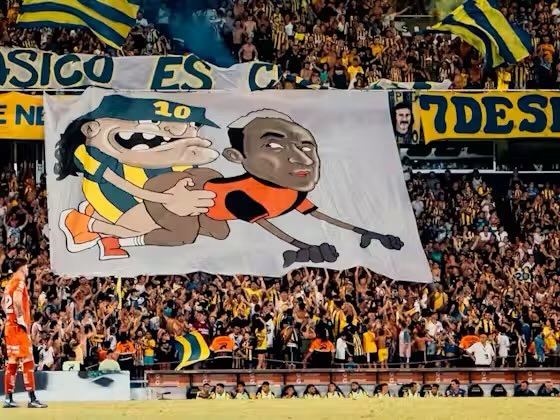

Rosario Central le lleva a Newell's Old Boys una diferencia de 22 partidos en el historial oficial del clásico rosarino.
Ambos clubes se han enfrentado en 281 ocasiones, con estos números:
Rosario Central: 99 triunfos.
Newell's Old Boys: 77 triunfos.
Empates: 103 partidos.
(Nota: Dos partidos se dieron por perdidos a ambos clubes por incidentes, lo que explica la suma de victorias).
A nivel local, la ventaja de Rosario Central se ha estirado en el último tiempo. De hecho, Newell's no logra ganarle a su eterno rival en condición de local desde el 2 de noviembre de 2008.
APRETAME SI TENÉS HUEVOS